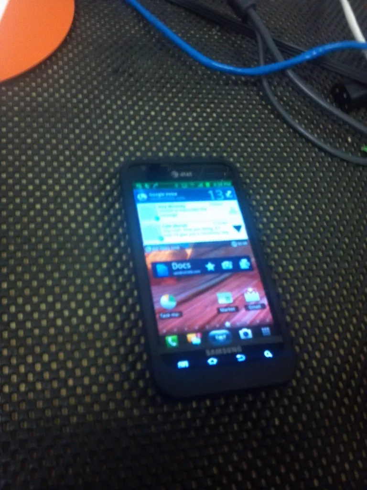
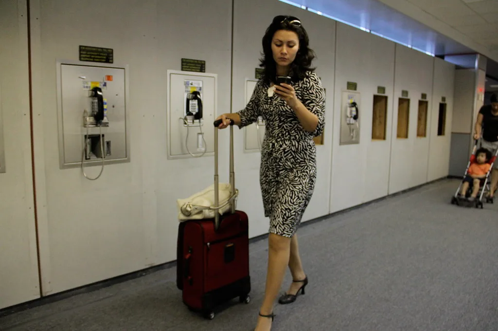

이재명 대통령, SNS 발언으로 여당 내 파장
이재명 대통령이 오는 8월 17일로 예정된 더불어민주당 전당대회의 후보 기탁금 상향 문제를 자신의 SNS에 잇따라 언급하면서 정치권에 적지 않은 파장이 일고 있다. 현직 대통령이 집권 여당의 내부 운영 사안에 대해 공개적으로 의견을 밝힌 것 자체가 이례적인 일로 받아들여지면서, 당 안팎에서 발언의 배경과 파급 효과를 둘러싼 다양한 해석이 쏟아지고 있다.
논란의 발단은 민주당이 전당대회를 앞두고 당대표·최고위원 후보의 기탁금을 기존보다 큰 폭으로 올리기로 한 결정이다. 기탁금은 후보 난립을 막기 위한 장치이지만, 액수가 지나치게 높아지면 자금력이 부족한 정치 신인이나 비주류 인사의 출마 문턱이 높아진다는 비판이 꾸준히 제기되어 왔다.

이 대통령은 SNS 게시글을 통해 이 같은 기탁금 상향 방침을 정면으로 지적한 것으로 알려졌다. 당의 문호를 넓혀야 할 시점에 오히려 진입 장벽을 높이는 것은 바람직하지 않다는 취지로 풀이된다. 대통령의 공개 발언 이후 당내에서는 기탁금 정책을 재검토해야 한다는 목소리와, 당무는 당에 맡겨야 한다는 반론이 동시에 나오면서 미묘한 긴장 기류가 형성되고 있다.
일각에서는 대통령이 여당 내부 사안에 개입하는 모양새가 당·정 관계의 균형을 흔들 수 있다는 우려도 제기한다. 전당대회를 목전에 둔 상황에서 대통령의 메시지가 특정 후보나 계파에 유리하게 작용할 수 있다는 시각도 있다. 반면 당원과 국민의 눈높이에서 필요한 문제 제기를 한 것일 뿐이라며 확대 해석을 경계하는 반응도 적지 않다.

법적·제도적 측면에서는 큰 문제가 없다는 평가가 우세하다. 법조계와 정치권의 다수 의견은 현직 대통령이 소속 정당의 내부 사안에 대해 의견을 표명하는 것이 현행법이나 민주당 당헌·당규에 저촉되지 않는다는 쪽으로 모인다. 대통령도 당적을 보유한 당원인 만큼 당내 문제에 발언할 권리가 있다는 것이다.
다만 정치적 관례의 측면에서는 논쟁이 이어질 전망이다. 역대 대통령들이 당·정 분리 원칙을 의식해 전당대회 등 당내 경선 국면에서 공개 발언을 자제해 온 전례가 있기 때문이다. 이번 발언이 일회성 문제 제기에 그칠지, 아니면 전당대회 국면 전반에 걸쳐 대통령의 영향력이 확대되는 신호탄이 될지 정치권이 주시하고 있다.